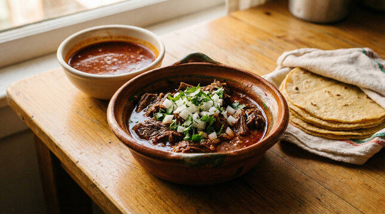

Home
Birria

Description
Birria is a rich, flavorful Mexico stew traditionally made from goat meat (chivo), though today it is very commonly prepared with beef (res).
The meat is marinated in a complex adobo of dried chili peppers (like Guajillo and Ancho), garlic, cumin, cloves, and cinnamon,
then slow-cooked until it becomes incredibly tender and "fall-apart."
Ingredients
- Meat: 4–5 lbs of Beef Chuck, Short Ribs, or Shank
- Dried Chilis: Guajillo (for color) and Ancho (for richness).
- Liquids: Beef broth and Apple cider vinegar.
- Aromatics: Fresh Garlic and White onion.
- Herbs: Dried Mexican Oregano and Bay leaves.
- Warm Spices: Cinnamon, Cloves, Cumin, and Black pepper.
Steps
- Prepare the Chilis: Remove the stems and seeds from the dried chilis. Toast them lightly in a pan for 1–2 minutes, then soak them in hot water for 15 minutes until soft.
- Make the Adobo: Blend the softened chilis with the onion, garlic, vinegar, and all the spices (cinnamon, cloves, cumin, oregano, ginger, and pepper). Strain the mixture through a sieve for a smooth sauce.
- Sear the Meat: Season the beef generously with salt. In a large pot with a little oil, sear the meat over medium-high heat until browned on all sides to lock in the flavor.
- Marinate & Simmer: Pour the blended adobo over the meat. Add the beef broth and bay leaves. Ensure the meat is completely submerged in the liquid.
- Cook Until Tender: Cover the pot and cook until the meat is "fall-apart" tender:
- Stovetop: 3–4 hours on low heat.
- Pressure Cooker: 1 hour.
- Slow Cooker: 8 hours on low.
- Shred the Meat: Remove the meat from the pot and shred it using two forks. Discard any large bones or excess fat.
- Finish the Consomé: Taste the broth remaining in the pot and add more salt if needed. This is your consomé.
- Serve: Place the shredded meat in a bowl, pour the hot broth over it, and garnish with fresh onion, cilantro, and a squeeze of lime.Serve: Place the shredded meat in a bowl, pour the hot broth over it, and garnish with fresh onion, cilantro, and a squeeze of lime.